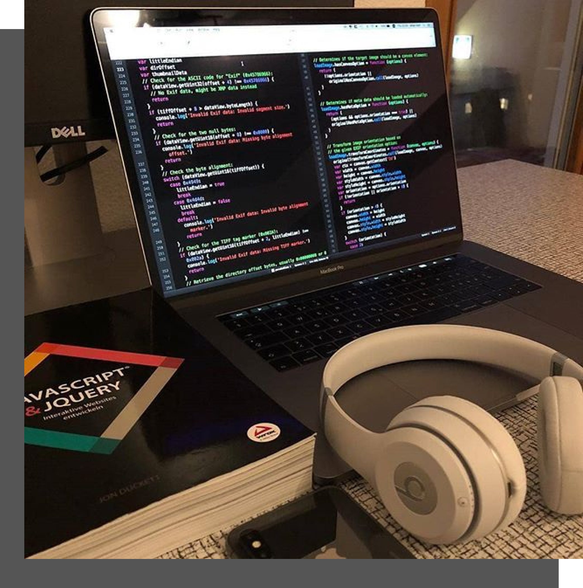

A vibrant and dynamic community of passionate developers at Babcock University
 Contribute on GitHub
Contribute on GitHub

Contribute on GitHub
ShadowDevs is a community of passionate developers focused on helping students, especially freshers and sophomores, gain the skills and experience they need to succeed after graduation.
Our mission is to empower students to work together on real-world projects. By building these projects in small teams, we not only gain valuable experience but also create something we can add to our resumes. Many members have used this experience to land internships and freelance gigs.
ShadowDevs bridges the gap between what you learn in the classroom and what you’ll face in the real world. Through teamwork and hands-on coding, we prepare for the challenges of the tech industry.
Whether you’re just starting or looking for new challenges, ShadowDevs welcomes you. Our community includes members of all skill levels, and we believe every contribution can make a difference.
Join us as we learn, build, and grow together. At ShadowDevs, we don’t just code—we collaborate and inspire. Come be part of our community, and let’s shape the future of tech together!